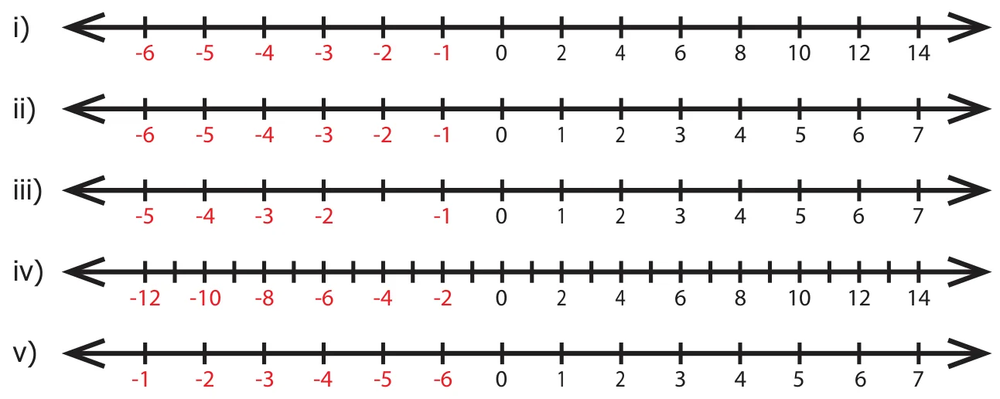
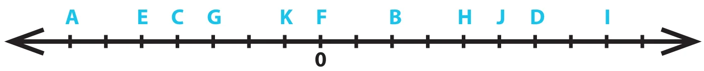

- Fill in the blanks
- The potable water available at 100m below the ground level is denoted as \(\underline{\qquad\qquad}\) m.
- A swimmer dives to a depth of 7 feet from the ground into the swimming pool. The integer that represents this, is \(\underline{\qquad\quad}\) feet.
- \(-46\) is to the \(\underline{\qquad}\) side of \(-35\) on the number line.
- There are \(\underline{\qquad}\) integers from \(-5\) to \(+5\) (both inclusive).
- \(\underline{\qquad}\) is an integer which is neither positive nor negative.
- Say True or False

- Each of the integers \(-18, 6, -12, 0\) is greater than \(-20\).
- \(-1\) is to the right of 0.
- \(-10\) and 10 are at equal distance from 1.
- All negative integers are greater than zero.
- All whole numbers are integers.
- Mark the numbers \(4, -3, 6, -1\) and \(-5\) on the number line.
- On the number line, which number is
- 4 units to the right of \(-7\)?
- 5 units to the left of 3?
- Find the opposite of the following numbers.
- 44
- \(-19\)
- 0
- \(-312\)
- 789
- If 15 km east of a place is denoted as \(+15\) km, what is the integer that represents 15 km west of it?
- From the following number lines, identify the correct and the wrong representations with reason.

- Write all the integers between the given numbers.
- 7 and 10
- \(-5\) and 4
- \(-3\) and 3
- \(-5\) and 0
- Put the appropriate signs as \(<\), \(>\) or \(=\) in the box.

- Arrange the following integers in ascending order.
- \(-11, 12, -13, 14, -15, 16, -17, 18, -19, -20\)
- \(-28, 6, -5, -40, 8, 0, 12, -1, 4, 22\)
- \(-100, 10, -1000, 100, 0, -1, 1000, 1, -10\)
- Arrange the following integers in descending order.
- \(14, 27, 15, -14, -9, 0, 11, -17\)
- \(-99, -120, 65, -46, 78, 400, -600\)
- \(111, -222, 333, -444, 555, -666, 7777, -888\)
Objective Type Questions
- There are \(\underline{\qquad\qquad}\) positive integers from \(-5\) to 6.
a) 5 b) 6 c) 7 d) 11
- The opposite of 20 units to the left of 0 is
a) 20 b) 0 c) \(-20\) d) 40
- One unit to the right of \(-7\) is...........
a) \(+1\) b) \(-8\) c) \(-7\) d) \(-6\)
- 3 units to the left of 1 is
a) \(-4\) b) \(-3\) c) \(-2\) d) 3
- The number which determines marking the position of any number to its opposite on a number line is
a) \(-1\) b) 0 c) 1 d) 10
Exercise 2.2
Miscellaneous Practice Problems
- Write two different real life situations that represent the integer \(-3\).
- Mark the following numbers on a number line
- All integers which are greater than \(-7\) but less than 7.
- The opposite of 3.
- 5 units to the left of \(-1\).
- Construct a number line that shows the depth of 10 feet from the ground level and its opposite.
- Identify the integers and mark on the number line that are at a distance of 8 units from \(-6\).
- Answer the following questions from the number line given below .

- Which integer is greater : G or K ? Why ?
- Find the integer that represents C.
- How many integers are there between G and H?
- Find the pairs of letters which are opposite of a number.
- Say True or False : 6 units to the left of D is \(-6\).